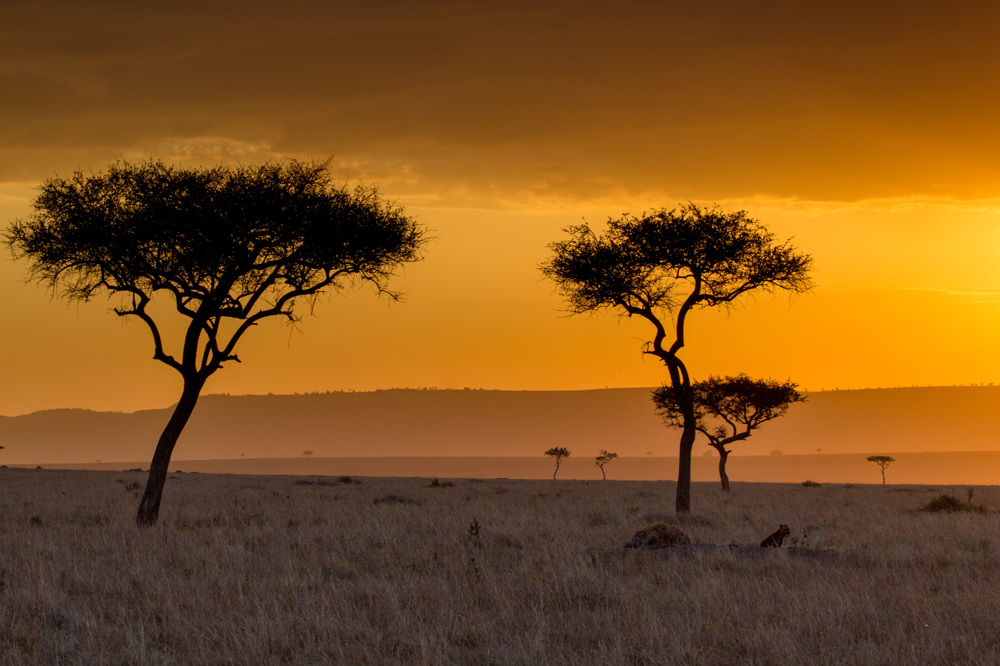
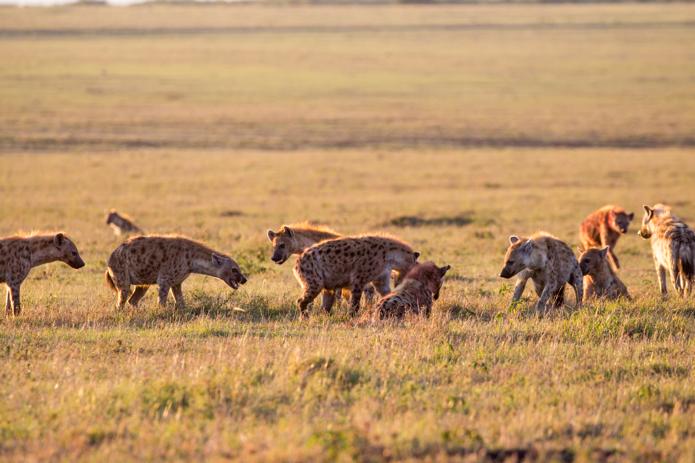
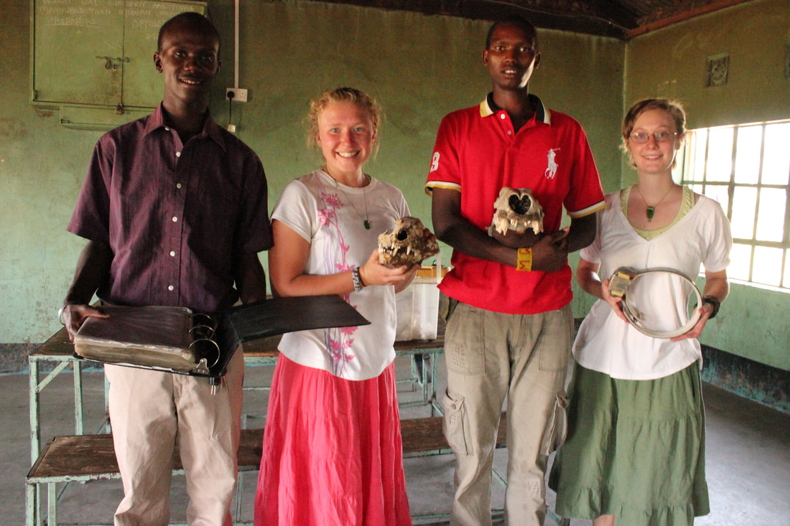

Maasai Mara, Kenya — Est. 1988
The Mara Hyena Project is one of the longest-running wildlife studies in the world, dedicated to the behavioral ecology and conservation of spotted hyenas in the Maasai Mara.
About the Project
Founded in 1988 by Dr. Kay Holekamp, the Mara Hyena Project has produced some of the most comprehensive data ever collected on a wild mammal population. Our team currently studies seven hyena clans in the Maasai Mara National Reserve, Kenya.
From collective behavior, communication, and cognition to development and life history, our research addresses fundamental questions about evolution and adaptation in dynamic environments.
Our History

Community Outreach
The MHP is deeply embedded in the Maasai Mara region. We work alongside Maasai community members, hire Maasai staff and researchers, provide outreach and teaching events at local schools, financially support the education of young Maasai scientists, aim to reduce and resolve human-hyena conflict in the region, and provide workshops and talks on a variety of topics from hyena biology to statistical tools for wildlife monitoring.
Our Outreach WorkTraining
The MHP helps train the next generation of field biologists. Research assistants live in our Maasai Mara camps and contribute to one of the longest-running studies of wild mammals, while our BEAM study abroad course brings undergraduates to Kenya for an intensive introduction to behavioral ecology.
Support the MHP
Long-term field research is expensive to maintain. Your support — whether through direct donation or by adopting a hyena — makes it possible to keep these clans monitored and this science alive.